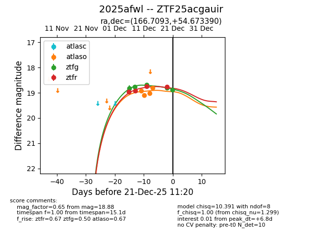
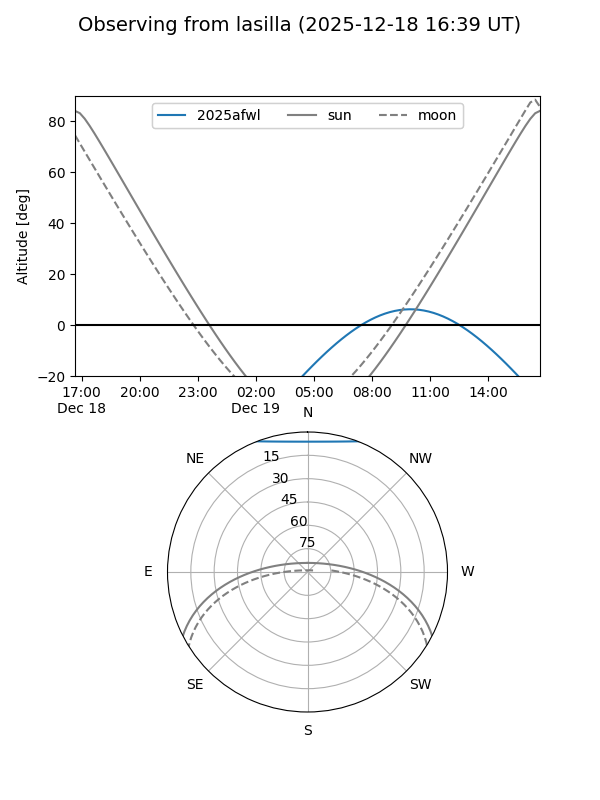
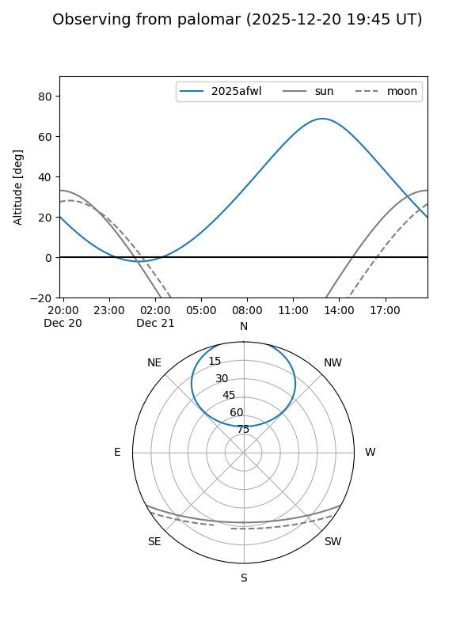
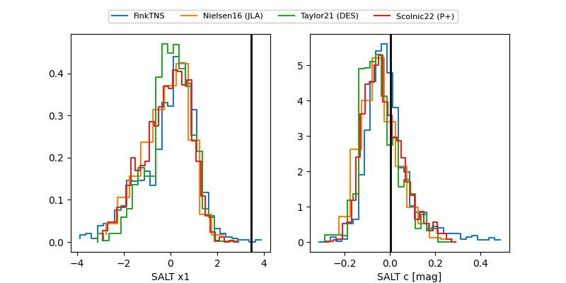

2025afwl
Target 2025afwl at 2025-12-27 16:17
Aliases and brokers:
FINK: fink-portal.org/ZTF25acgauir
Lasair: lasair-ztf.lsst.ac.uk/objects/ZTF25acgauir
ALeRCE: alerce.online/object/ZTF25acgauir
TNS: wis-tns.org/object/2025afwl
YSE: ziggy.ucolick.org/yse/transient_detail/2025afwl
alt names
ZTF25acgauir (ztf,fink_ztf)
2025afwl (tns,yse)
Coordinates:
equatorial (ra, dec) = 166.7093,+54.67339
equatorial (HMS+DMS) = 11:06:50.24,+54:40:24.20
galactic (l, b) = (150.4374,+56.50885)
Flags:
Photometry:
last atlasc=19.05, atlaso=19.28, ztfg=18.88, ztfr=18.79
1 atlasc, 5 atlaso, 5 ztfg, 5 ztfr detections
Lightcurve

Visibility


Additional plots
